YSA’ları anlamak için onların temel taşı olan tek nöron’u görmemiz lazım.
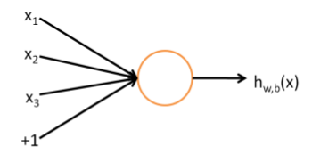
Üstteki resimde üç girdisi ve tek çıktısı olan bir nöron görüyoruz. Girdi olarak \(x_1,x_2,x_3\) ve çıktı olarak bir fonksiyon hesabı. Literatürde üstteki yapıya perseptron (perceptron) ismi de veriliyor. Eğer 0/1, evet/hayır türünde çıktıları modellemek istersek bu fonksiyon çoğunlukla sigmoid fonksiyonu olarak seçilir. Yani
\[ h (x) = f(w^Tx) = f(\sum_{i=1}^{3} w_ix_i + b)\]
ve
\[ f(z) = \frac{1}{1 + \exp(-z)}\]
ki \(w\) ağırlık değerlerinin taşıyan bir vektördür. Sigmoid seçiminin bir diğer sebebi türevinin rahat alınabilmesi. Alternatif fonksiyonlar \(\tanh\) olabilirdi, ya da düzeltilmiş lineer ünite (rectified linear unit -ReLu-) fonksiyonları. ReLu’lar YSA’ların uzantısı Derin Öğrenim’de oldukca popüler oldu, tanımı
\[ f(z) = \max(0,z)\]
Şimdi tek nörondan çok katmanlı bir YSA nasıl oluşturulur görelim,
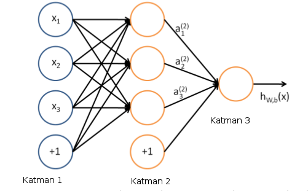
Bu yapıda her \(x_i\)’in her nörona gittiğini görüyoruz, bu katmanlara bu sebeple tamamen bağlanmış katman (fully-connected layer), ya da yoğun (dense) katman deniyor. Her türlü girdi / nöron kombinasyonu çarpıldığı için ağırlıklar bir matris içinde tutulur, ve aktivasyondan önceki vektör basit bir matris çarpımı haline gelir, mesela 2. katman aktivasyonu \(f_2\) olsun, 1. gizli katman çıktısı
\[ f_2 (W_1x + b) \]
Girdi \(4 \times 1\), ağırlık \(W_1\) boyutu \(3 \times 4\), o zaman çarpım \(3 \times 1\) olacak, \(f_2\) uygulanınca boyut değişmez (her öge üzerinde aynı fonksiyon işletiliyor) sonuç \(3 \times 1\), bu da zaten 2. katmana giren (sonra oradan sonraki katmana çıkan) hesap. Üstteki diyagramda yanlılık (bias) ayrı bir nöron olarak eklenmiş (bazen bu yapılmayabiliyor).
İki gizli seviyesi (hidden layer) olan bir YSA,
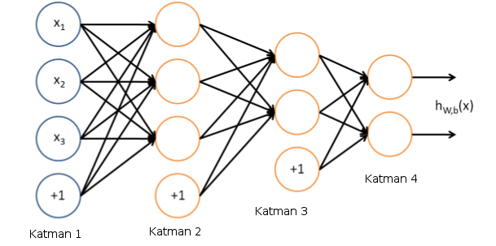
Görüldüğü gibi çok seviyeli durumda bir seviyenin çıktısı bir diğer seviyenin girdisi haline geliyor. YSA’lar denetimli (supervised) şekilde eğitilirler. Elde \(x_i,y_i\) veri noktaları vardır, ve her bir ya da çok boyutlu \(x_i\) yine bir ya da çok boyutlu \(y_i\) ile eşlidir. Aynen regresyonda olduğu gibi bu veri çiftlerini alırız ve onları en iyi temsil eden YSA’yı eğitmek için kullanırız. Eğitim tamamlandığında \(i\) katmanındaki \(W_i\) ağırlıkları belli değerlere sahip olurlar, ve eldeki “model’’ bu ağırlıklardır. Yeni bir veri noktası verildiğinde o veri noktası ağırlıklar her katmanın \(W_i\)’sı ile çarpılıp, toplanıp, aktivasyon fonksiyonlarına geçilip, tüm katmanlardan bu şekilde geçirildikten sonra en sondaki çıktı değerine erişilir.
Yanlılık taşımayan şekilde ağ yapısı görelim ve matris çarpımı ile tüm girdileri / çıktıları gösterelim,
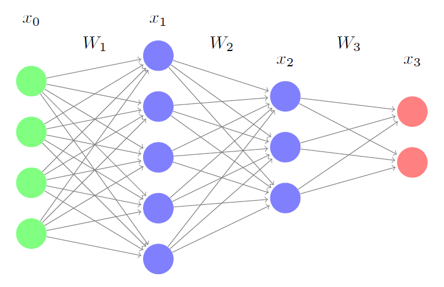
\[ Girdi = x_0\]
\[ x_1 = f_1(W_1x_0)\]
\[ x_2 = f_2(W_2x_1)\]
\[ Çıktı = f_3(W_3x_2) \]
Aktivasyon için \(f_1,f_2,f_3\) ReLu ya da sigmoid seçilebilir.
İki gizli seviyesi olan (ve yeterince sayıda nöron içeren) YSA’nın evrensel yaklaşıklayıcı (universal approximator) olduğu iddia edilir, yani üstteki gibi yeterince çetrefil bir YSA her türlü fonksiyonu yaklaşık olarak temsil edebilir. İşin tarihine gidersek, ilk başta tek seviyeli YSA vardı, fakat XOR fonksiyonunu başarılı şekilde temsil edemedi. Gizli (tek) seviyeli olan bunu başardı.
YSA’lar imaj tanıma alanında bolca kullanılmıştır. Bir imajda, mesela sayı tanıma uygulamasında, alttaki gibi pek çok resimler olabilir,
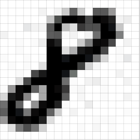 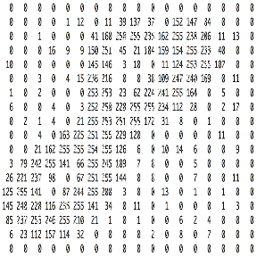
Bir imaj nihayetinde o resmi temsil eden gri değerlerin olduğu bir matristen ibarettir. YSA’ya girdi olması için matris genelde düzleştirilir, ve tek bir vektör olarak verilir, 8x8 matris 64x1 vektörü olur, girdi 64 boyutlu bir \(x_i\) çıktı ise tek boyutlu 0,1,2,..,9 gibi etiketler.. Çoğunlukla bu tür kategorik çıktılar ikisel olarak modellenir, 0,..,9 yerine 10 öğeli bir ikisel vektör alınır, 9. öğesi 1 diğerleri 0 yapılır.
YSA’lar nasıl eğitilir? Eldeki \(x_i,y_i\) çiftleri YSA’ya verilir, her \(x_i\) önce tahmin için kullanılır, ve bir YSA’nın tahmin ettiğine, bir de gerçek veriye bakılır. Bu fark, hata, YSA’nın düzeltilmesi / iyileştirilmesi için kullanılır, burada geriye yayılım (backpropagation -backprop-) adlı bir teknik var. YSA içinde, üstte gördüğümüz gibi, sol seviyeden başlayarak sağa gidecek şekilde, fonksiyonlar, fonksiyonların fonksiyonları şeklinde çetrefil bir yapı var. Backprop elde hatayı alıp YSA’daki tüm nöronların ağırlıklarını bu hataya göre düzeltilmesini, düzelmenin “yayılmasını’’ sağlar [1,2]. Bu işlem ardı ardına, farklı her döngüde tekrarlanır, bir süre sonra YSA eldeki veriyi en iyi temsil eden ideal bir hale yaklaşacaktır.
Formüller ve Kod
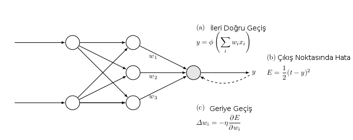
Backprop’un genel bir resmi üstte: a) Eğitim verisi ileri yönde (soldan sağa) YSA’ya veriliyor, ve bu veri her nokta için, o anda sahip olunan ağırlıklara göre bir tahmin üretiyor. b) Eğitim verisindeki beklenen ve tahmin edilen değerler arasındaki hata hesaplanıyor c) Hata YSA’ya “geri yönde’’ veriliyor, her ağırlık \(w_i\)’dan \(\frac{\partial E}{\partial w_i}\) büyüklüğünün bir kısmı çıkartılıyor, bu düzeltmenin ne oranda yapıldığı dışarıdan, önceden kararlaştırılan bir sabit \(\eta\)’e oranda yapılıyor.
Daha detaylı bir resimde gösterelim,
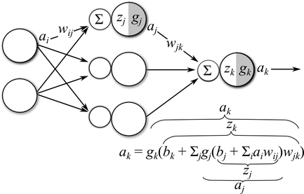
Tek bir gizli katman var, girdi katmanı \(a_i\)’den gelen sinyaller \(w_{ij}\) ağırlıkları ile çarpılıyor, daha önce gördüğümüz gibi bu tamamen bağlanmış katman, çünkü tüm girdi sinyalleri her gizli katman düğümüne hep beraber giriş yapıyorlar (tabii farklı ağırlıklar üzerinden). Devam edelim, ağırlıklar sonrası bir de yanlılık (bias) eklenecek (resimde atlandı), ve elde edilen \(z_i = b_j + \sum_i a_i w_{ij}\). Bu 3. katmandaki aktivasyon önceki son hal. Gizli katmandan çıkan sinyal \(a_j\), bu sinyaller son katmanda bu sefer \(w_{jk}\) ağırlıkları ile çarpılıp toplanacak, \(b_k\) yanlılığı eklenecek, ve sonuç \(g_k\) aktivasyon fonksiyonundan geçirilip çıktı \(a_k\) haline getirilecek.
Bir YSA’yı eğitmek demek öyle bir parametre demeti \(\theta = (W,b)\) bulmaktır ki ağın hatası en minimal seviyede olsun. Çoğunlukla bu hata hedef (eğitim) çıktısı \(t_k\) ile ağın en son ağırlıklara göre kendi hesapladığı \(a_k\) fark karelerinin toplamı üzerinden hesaplanır.
\[ E = \frac{1}{2} \sum_k (a_k - t_k)^2\]
Çıktı katmanının hata fonksiyonu üzerinde direk etkisi olduğu için bu parametreler için gradyanı hesaplamak oldukca kolay,
\[ \frac{\partial E}{\partial w_{jk}} = \frac{1}{2} \sum_k (a_t - t_k)^2\]
\[ = (a_k-t_k) \frac{\partial }{\partial w_{jk}} (a_k-t_k)\]
Bu türevde Zincirleme Kanununu kullandık. Dikkat edersek toplama operatörü kayboldu, bunun sebebi \(j\)’inci düğüme göre türev alıyor olmamız o yüzden \(j\)’inci haricinde tüm diğer parametreler türevde sıfırlanıyor, toplamdan geriye tek bir terim kalıyor. \(t_k\)’in türevi de sıfır çünkü içinde \(w_{jk}\)’ye bağlı hiçbir değişken yok (\(t_k\) dışarıdan verilen eğitim verisi sonuçta, çoğu durum için sabit sayılabilir). Ayrıca \(a_k = g(z_k)\) olduğunu hatırlayalım. O zaman
\[ \frac{\partial E}{\partial w_{jk}} = (a_k-t_k) \frac{\partial}{\partial w_{jk}} a_k \]
\[ = (a_k-t_k) \frac{\partial}{\partial w_{jk}} g_k(z_k) \]
\[ = (a_k-t_k)g_k'(z_k)\frac{\partial}{\partial w_{jk}} z_k \qquad (1) \]
Yine Zincirleme Kanununu kullandık. Şimdi hatırlayalım ki \(z_k=b_j+\sum_j g_j(z_j)w_{jk}\), yani \(\frac{\partial z_k}{\partial w_{jk}} = g_j(z_j) = a_j\), demek ki
\[ \frac{\partial E}{\partial w_{jk}} = (a_k-t_k)g_k'(z_k) a_j \]
Bu üç terimin çarpımı, birincisi ağ çıktısı “tahmini’’ ile hedef değerinin farkı, diğeri çıktı katmanının aktivasyon fonksiyonunun türevi. Üçüncüsü gizli katmandaki \(j\)’inci düğümün aktivasyon çıktı değeri. Bu üçlü çarpımı kısaltılmış şekilde göstermek için \(k\) indisi için \(\delta_k\) değişkeni tanımlayabiliriz,
\[ \delta_k = (a_k-t_k)g_k'(z_k)\]
O zaman
\[ \frac{\partial E}{\partial w_{jk}} = \delta_k a_j \]
\(\delta_k\) değişkeni hatanın çıktı aktivasyonunden geriye doğru filtrelenmiş hali olarak görülebilir, yani bir tür hata sinyali olarak alınabilir. Kabaca belirtmek gerekirse üstteki formül her \(w_{jk}\)’nin nihai hataya ne kadar ek yaptığını belirtir. Bu sebeple, eğitim sırasında, bu hataların tersi yönde gidilmelidir ki hata daha azalsın.
\[ w_{jk} \leftarrow w_{jk} - \eta \frac{\partial E}{\partial w_{jk}} \]
Çıktı Katman Yanlılığı, \(b_k\)
Yanlılık için \(w_{jk}\)’ye benzer bir yaklaşımı takip ediyoruz, tek fark (1)’deki 3. terim şöyle,
\[ \frac{\partial }{\partial b_k} z_k = \frac{\partial }{\partial b_k} \big[ b_k + \sum_j g_j(z_j) \big] = 1 \]
ve sonuç olarak alttaki gradyanı elde ediyoruz,
\[ \frac{\partial E}{\partial b_k} (a_k-t_k) g_k'(z_k)(1)\]
\[ = \delta_k\]
Yani yanlınlık gradyanı sadece çıktı ünitelerinin geriye yayılmış hali. Bu mantıklı aslında çünkü yanlılığın aktivasyon üzerindeki ağırlığı hep 1’e eşit, ileri doğru giden sinyal ne olursa olsun. Bu sebeple yanlılık gradyanı ileri giden sinyalden hiç etkilenmiyor, sadece hatanın kendisinden etkileniyor.
Gizli Katman Ağırlıklarının Gradyanı
Bu katmanın nihai hata üzerinde etkisi dolaylı olduğu için gizli katman ağırlıkları \(w_{ij}\) için gradyanları hesaplamak biraz daha zor. Fakat hesaba yine aynı şekilde başlıyoruz,
\[ \frac{\partial E}{\partial w_{ij}} = \frac{1}{2} \sum_k (a_k-t_k)^2 \]
\[ = \sum_k (a_k-t_k) \frac{\partial }{\partial w_{ij}} a_k\]
Dikkat edersek toplam operatörü bu sefer kaybolmadı, çünkü katmanların tam bağlı olması sebebiyle, her gizli katman ünitesinden çıkan sonuç her çıktı katmanındaki üniteyi etkiliyor. Devam edersek, ve \(a_k = g_k(z_k)\) olmasından hareketle,
\[ \frac{\partial E}{\partial w_{ij}} = \sum_k (a_k-t_k) \frac{\partial }{\partial w_{ij}} g_k(z_k) \]
\[ = \sum_k (a_k-t_k) g_k'(z_k) \frac{ \partial }{ \partial w_{ij} } z_k \qquad (2) \]
Yine Zincirleme Kanununu kullandık. Evet, şimdi işler biraz daha karmaşıklaşacak. Üstteki formüldeki üçüncü terimde olan kısmi türeve bakarsak, bu türev \(w_{ij}\)’e göre ama türevi alınan \(z_j\) \(j\) indisine bağlı. Şimdi ne yapacağız? \(z_k\)’yi açınca içinde alt fonksiyonlar olduğunu görüyoruz,
\[ z_k = b_k + \sum_j a_j w_{jk}\]
\[ = b_k + \sum_j g_j(z_j) w_{jk}\]
\[ = b_k + \sum_j g_j (b_i + \sum_i z_i w_{ij})w_{jk} \]
Üstteki son denklemdeki son terime göre \(z_k\) sadece dolaylı olarak \(w_{ij}\)’ye bağlı. Bu ayrıca demektir ki Zincirleme Kanununu kullanarak \(\frac{\partial z_k}{\partial w_{ij}}\)’i hesaplayabiliriz. Türetimin belki de en püf noktalı yeri burası..
\[ \frac{\partial z_k}{\partial w_{ij}} = \frac{\partial z_k}{\partial a_j}\frac{\partial a_j}{\partial w_{ij}} \]
\[ = \frac{\partial }{\partial a_j} a_j w_{jk} \frac{\partial a_j}{\partial w_{ij}}\]
\[ = w_{jk} \frac{\partial a_j}{\partial w_{ij}}\]
\[ = w_{jk} \frac{\partial g_j(z_j)}{\partial w_{ij}}\]
\[ = w_{jk}g_k'(z_j)\frac{\partial z_j}{\partial w_{ij}}\]
\[ = w_{jk}g_j'(z_j) \frac{\partial }{\partial w_{ij}}(b_i + \sum_i a_iw_{ij})\]
\[ = w_{jk}g_j'(z_j)a_i\]
Eğer üstteki formülü (2)’deki \(z_k\)’ye koyarsak, \(\frac{\partial E}{\partial w_{ij}}\) için şunu elde ederiz,
\[ \frac{\partial E}{\partial w_{ij}} = \sum_k (a_k-t_k)g_k'(z_k)w_{jk}g_j'(z_j)a_i \]
\[ g_j'(z_j)a_i \sum_k (a_k-t_k)g_k'(z_k)w_{jk} \]
\[ = a_ig_j'(z_j) \sum_k \delta_k w_{jk} \]
Gizli katman yanlılığının gradyanı için Zincirleme Kanunu ile \(\frac{\partial z_k}{\partial b_i}\) hesabını yapmak lazım.
\[ \frac{\partial z_k}{\partial b_i} = w_{jk}g_j'(z_j) \frac{\partial z_j}{\partial b_i} \]
\[ = w_{jk}g_j'(z_j) \frac{\partial }{\partial b_i} (b_i + \sum_i a_iw_{ij})\]
\[ = w_{jk}g_j'(z_j) (1)\]
bunun sonucu
\[ \frac{\partial E}{\partial b_i} = g_j'(z_j) \sum_k \delta_k w_{jk} \]
\[ = \delta_j \]
Özet olarak YSA eğitimi için yapılan hesaplar şunlar:
İleri yönde sinyalleri girdiden çıktıya doğru hesapla
Tahmin \(a_k\) ve hedef \(t_k\)’ye göre hata \(E\)’yi hesapla
Hatayı önceki katmanlardaki ağırlıklar ve aktivasyon fonksiyonlarının gradyanlarına göre geriye doğru yay.
Parametreleri her parametrenin gradyanı için \(\theta \leftarrow \theta - \eta \frac{\partial E}{\partial \theta}\) şeklinde güncelle.
Kodlar
Alttaki kod [3] baz alınarak yazıldı. Bu arada hem gizli, hem çıktıdaki aktivasyonlar \(g_k,g_j\), ya da hata \(E\) hesabında farklı seçimler yapılabilir. Mesela [3] üstte belirttiğimiz gibi hata hesaplıyor ama [2]’deki hata
\[ E = -\frac{1}{N} \sum_n \sum_i y_{n,i} \log \hat{y}_{n,i}\]
ile hesaplanıyor. Her iki kod çıktı aktivasyonu için “softmax’’ denen fonksiyon kullanıyor. Softmax 0/1 kararı yapan lojistik fonksiyonun 2’den fazla çıktı boyutu için genellenmiş halidir, yani iki seçimden biri yerine K seçimden biri için kullanılır, ve
\[ \sigma(z)_j = \frac{e^{z_j}}{\sum_{k=1}^{K} e^{z_k}}\]
ile hesaplanır, \(z\) vektöründeki herhangi bazı reel değerleri “ezerek’’ \(\sigma(z)\) vektörü içinde toplamı 1 olacak değerlere çevirir.
Alttaki kod gizli katman aktivasyonu için sigmoid kullanmış.
from numpy import *
class mlp:
def __init__(self,inputs,targets,nhidden,beta=1,momentum=0.9):
self.nin = shape(inputs)[1]
self.nout = shape(targets)[1]
self.ndata = shape(inputs)[0]
self.nhidden = nhidden
self.beta = beta
self.momentum = momentum
self.weights1 = (random.rand(self.nin+1,self.nhidden)-0.5)*2/sqrt(self.nin)
self.weights2 = (random.rand(self.nhidden+1,self.nout)-0.5)*2 / \
sqrt(self.nhidden)
def earlystopping(self,inputs,targets,valid,validtargets,eta,niterations=100):
valid = concatenate((valid,-ones((shape(valid)[0],1))),axis=1)
old_val_error1 = 100002
old_val_error2 = 100001
new_val_error = 100000
count = 0
while (((old_val_error1 - new_val_error) > 0.001) or \
((old_val_error2 - old_val_error1)>0.001)):
count+=1
self.mlptrain(inputs,targets,eta,niterations)
old_val_error2 = old_val_error1
old_val_error1 = new_val_error
validout = self.mlpfwd(valid)
new_val_error = 0.5*sum((validtargets-validout)**2)
print "Stopped", new_val_error,old_val_error1, old_val_error2
return new_val_error
def mlptrain(self,inputs,targets,eta,niterations):
inputs = concatenate((inputs,-ones((self.ndata,1))),axis=1)
change = range(self.ndata)
updatew1 = zeros((shape(self.weights1)))
updatew2 = zeros((shape(self.weights2)))
for n in range(niterations):
self.outputs = self.mlpfwd(inputs)
error = 0.5*sum((targets-self.outputs)**2)
#if (n % 100) ==0 : print "Iteration: ",n, " Error: ",error
deltao = (targets-self.outputs)/self.ndata
deltah = self.hidden*(1.0-self.hidden)*\
(dot(deltao,transpose(self.weights2)))
updatew1 = eta*(dot(transpose(inputs),deltah[:,:-1])) + \
self.momentum*updatew1
updatew2 = eta*(dot(transpose(self.hidden),deltao)) + \
self.momentum*updatew2
self.weights1 += updatew1
self.weights2 += updatew2
random.shuffle(change)
inputs = inputs[change,:]
targets = targets[change,:]
def mlpfwd(self,inputs):
self.hidden = dot(inputs,self.weights1);
self.hidden = 1.0/(1.0+exp(-self.beta*self.hidden))
self.hidden = concatenate((self.hidden,-ones((shape(inputs)[0],1))),axis=1)
outputs = dot(self.hidden,self.weights2);
normalisers = sum(exp(outputs),axis=1)*ones((1,shape(outputs)[0]))
return transpose(transpose(exp(outputs))/normalisers)from sklearn.cross_validation import train_test_split
from sklearn import datasets
import mlp
def generate_data():
np.random.seed(0)
X, y = datasets.make_moons(200, noise=0.20)
return X, y
one_hot = lambda x, K : np.array(x[:,None] == np.arange(K)[None, :], dtype=int)
X, y = generate_data()
y2 = one_hot(y, 2)
print X.shape, y2.shape
X_train, X_test, y_train, y_test = train_test_split(X, y2, test_size=0.2,random_state=0)
print X_train.shape, y_train.shape
print X_test.shape, y_test.shape
net = mlp.mlp(X_train,y_train,2)
print net.earlystopping(X_train,y_train,X_test,y_test,0.1)(200, 2) (200, 2)
(160, 2) (160, 2)
(40, 2) (40, 2)
Stopped 2.86548233378 2.86551829438 2.86620503073
Out[1]:
2.8654823337797608def predict(x):
inputs2 = np.concatenate((x,-np.ones((np.shape(x)[0],1))),axis=1)
outputs = net.mlpfwd(inputs2)
return np.where(outputs>0.5,1,0)
def plot_decision_boundary(XX, yyy):
# Set min and max values and give it some padding
x_min, x_max = XX[:, 0].min() - .5, XX[:, 0].max() + .5
y_min, y_max = XX[:, 1].min() - .5, XX[:, 1].max() + .5
h = 0.01
# Generate a grid of points with distance h between them
xx, yy = np.meshgrid(np.arange(x_min, x_max, h), np.arange(y_min, y_max, h))
# Predict the function value for the whole gid
Z = predict(np.c_[xx.ravel(), yy.ravel()])
Z = Z.argmax(axis=1)
Z = Z.reshape(xx.shape)
# Plot the contour and training examples
plt.contourf(xx, yy, Z, cmap=plt.cm.Spectral)
yyy = yyy.argmax(axis=1)
XX1 = XX[yyy==0]; XX2 = XX[yyy==1]
plt.scatter(XX1[:, 0], XX1[:, 1], color='blue')
plt.hold(True)
plt.scatter(XX2[:, 0], XX2[:, 1], color='red')
plot_decision_boundary(X, y2)
plt.savefig('mlp_06.png')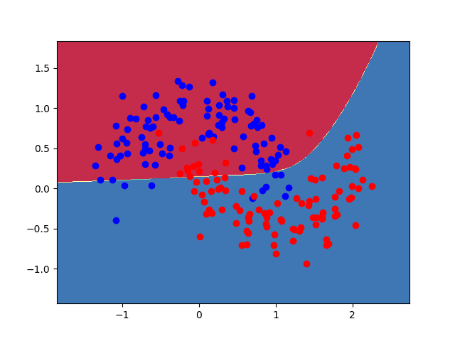
Alttaki alternatif bir kod, bu kod [2]’yi baz alıyor, YSA ile 0/1 regresyonu yapacak, gizli katman aktivasyonu için \(\tanh\) kullanılmış. Karar sınırları grafikleniyor.
import pandas as pd
import numpy as np
from sklearn import datasets, linear_model
class Config:
nn_input_dim = 2 # input layer dimensionality
nn_output_dim = 2 # output layer dimensionality
eta = 0.01 # learning rate for gradient descent
reg_lambda = 0.01 # regularization strength
def generate_data():
np.random.seed(0)
X, y = datasets.make_moons(200, noise=0.20)
return X, y
def visualize(X, y, model):
plot_decision_boundary(lambda x:predict(model,x), X, y)
def plot_decision_boundary(pred_func, X, y):
x_min, x_max = X[:, 0].min() - .5, X[:, 0].max() + .5
y_min, y_max = X[:, 1].min() - .5, X[:, 1].max() + .5
h = 0.01
xx, yy = np.meshgrid(np.arange(x_min, x_max, h), np.arange(y_min, y_max, h))
Z = pred_func(np.c_[xx.ravel(), yy.ravel()])
Z = Z.reshape(xx.shape)
plt.contourf(xx, yy, Z, cmap=plt.cm.Spectral)
plt.scatter(X[:, 0], X[:, 1], c=y, cmap=plt.cm.Spectral)
def calculate_loss(model, X, y):
num_examples = len(X) # training set size
W1, b1, W2, b2 = model['W1'], model['b1'], model['W2'], model['b2']
z1 = X.dot(W1) + b1
a1 = np.tanh(z1)
z2 = a1.dot(W2) + b2
exp_scores = np.exp(z2)
probs = exp_scores / np.sum(exp_scores, axis=1, keepdims=True)
corect_logprobs = -np.log(probs[range(num_examples), y])
data_loss = np.sum(corect_logprobs)
data_loss += Config.reg_lambda / 2 * (np.sum(np.square(W1)) + \
np.sum(np.square(W2)))
return 1. / num_examples * data_loss
def predict(model, x):
W1, b1, W2, b2 = model['W1'], model['b1'], model['W2'], model['b2']
z1 = x.dot(W1) + b1
a1 = np.tanh(z1)
z2 = a1.dot(W2) + b2
exp_scores = np.exp(z2)
probs = exp_scores / np.sum(exp_scores, axis=1, keepdims=True)
return np.argmax(probs, axis=1)
def build_model(X, y, nn_hdim, num_passes=20000, print_loss=False):
num_examples = len(X)
np.random.seed(0)
W1 = np.random.randn(Config.nn_input_dim, nn_hdim) / np.sqrt(Config.nn_input_dim)
b1 = np.zeros((1, nn_hdim))
W2 = np.random.randn(nn_hdim, Config.nn_output_dim) / np.sqrt(nn_hdim)
b2 = np.zeros((1, Config.nn_output_dim))
model = {}
for i in range(0, num_passes):
z1 = X.dot(W1) + b1
a1 = np.tanh(z1)
z2 = a1.dot(W2) + b2
exp_scores = np.exp(z2)
probs = exp_scores / np.sum(exp_scores, axis=1, keepdims=True)
delta3 = probs
delta3[range(num_examples), y] -= 1
dW2 = (a1.T).dot(delta3)
db2 = np.sum(delta3, axis=0, keepdims=True)
delta2 = delta3.dot(W2.T) * (1 - np.power(a1, 2))
dW1 = np.dot(X.T, delta2)
db1 = np.sum(delta2, axis=0)
dW2 += Config.reg_lambda * W2
dW1 += Config.reg_lambda * W1
W1 += -Config.eta * dW1
b1 += -Config.eta * db1
W2 += -Config.eta * dW2
b2 += -Config.eta * db2
model = {'W1': W1, 'b1': b1, 'W2': W2, 'b2': b2}
if print_loss and i % 1000 == 0:
print("Loss after iteration %i: %f" % (i, calculate_loss(model, X, y)))
return modelimport mlp2
X, y = mlp2.generate_data()
model = mlp2.build_model(X, y, 3, print_loss=True)
mlp2.plot_decision_boundary(lambda x:predict(model,x), X, y)
plt.title('YSA')
plt.savefig('mlp_08.png')Loss after iteration 0: 0.432387
Loss after iteration 1000: 0.068947
Loss after iteration 2000: 0.068883
Loss after iteration 3000: 0.070752
Loss after iteration 4000: 0.070748
Loss after iteration 5000: 0.070751
Loss after iteration 6000: 0.070754
Loss after iteration 7000: 0.070756
Loss after iteration 8000: 0.070757
Loss after iteration 9000: 0.070758
Loss after iteration 10000: 0.070758
Loss after iteration 11000: 0.070758
Loss after iteration 12000: 0.070758
Loss after iteration 13000: 0.070758
Loss after iteration 14000: 0.070758
Loss after iteration 15000: 0.070758
Loss after iteration 16000: 0.070758
Loss after iteration 17000: 0.070758
Loss after iteration 18000: 0.070758
Loss after iteration 19000: 0.070758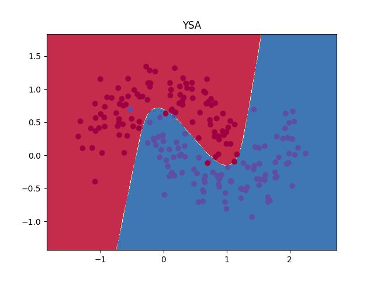
Karşılaştırmak için lojistik regresyon kullanalım, ve aynı karar sınırlarını grafikleyelim,
clf = linear_model.LogisticRegressionCV()
clf.fit(X, y)
mlp2.plot_decision_boundary(lambda x: clf.predict(x), X, y)
plt.title('Lojistik Regresyon')
plt.savefig('mlp_09.png')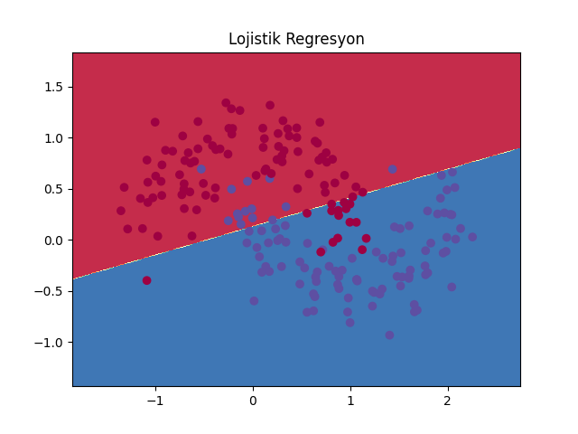
Görüldüğü gibi karar sınırı daha basit, kıyasla YSA çok daha esnek bir şekilde ayrım yapabiliyor.
Aktivasyon Fonksiyonları
Biraz once ReLu’dan bahsettik, \(tanh\) yerine kullanilabilir. Bir diger fonksiyon sigmoid. Bu fonksiyonlarin tipik grafikleri alttadir.
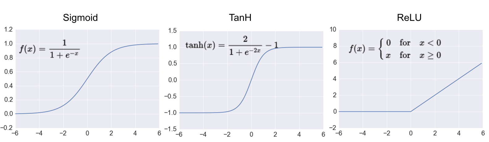
Kaynaklar
[1] Stansbury, Derivation: Error Backpropagation & Gradient Descent for Neural Networks, https://theclevermachine.wordpress.com/2014/09/06/derivation-error-backpropagation-gradient-descent-for-neural-networks/
[2] Britz, Implementing a Neural Network from Scratch in Python - An Introduction, http://www.wildml.com/2015/09/implementing-a-neural-network-from-scratch/
[3] Marsland, Machine Learning - An Algorithmic Approach